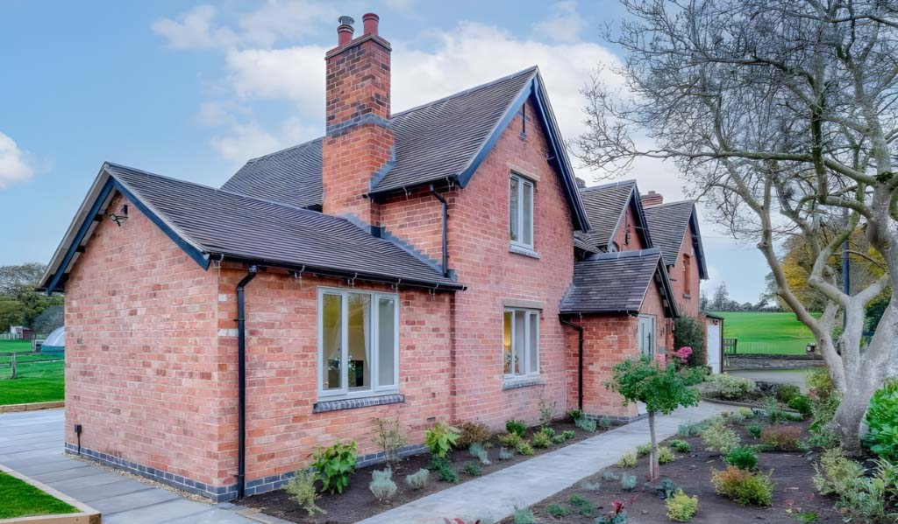
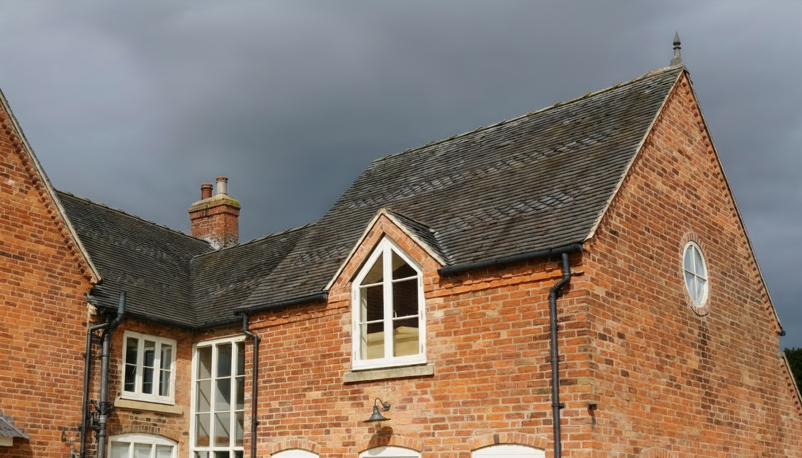
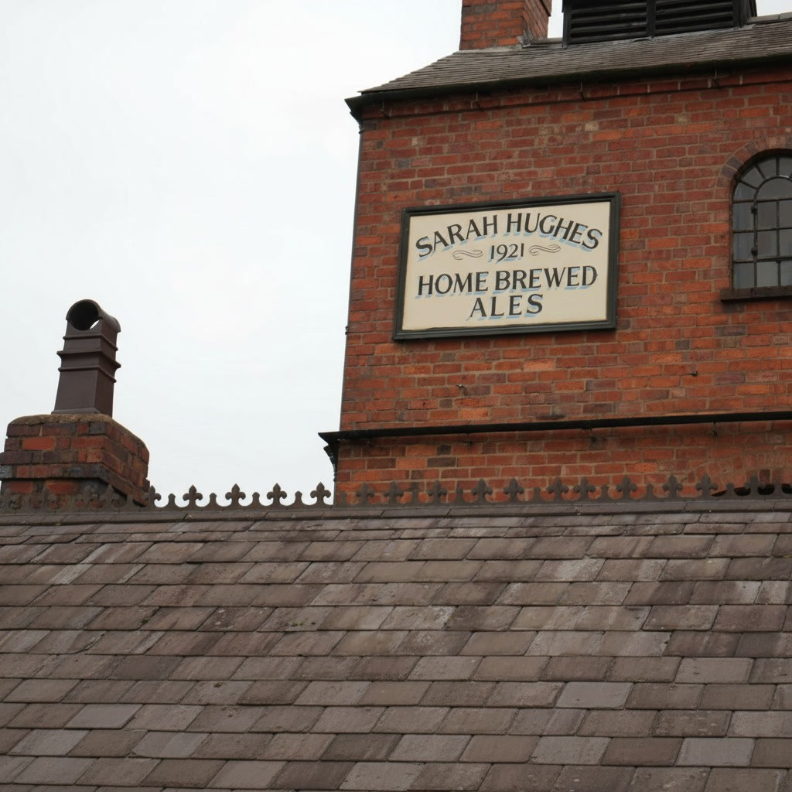
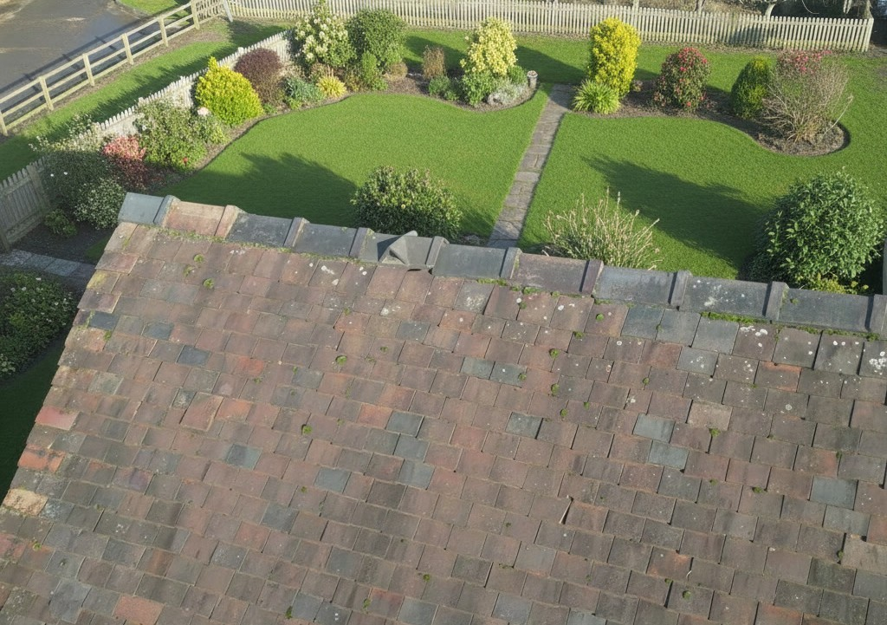
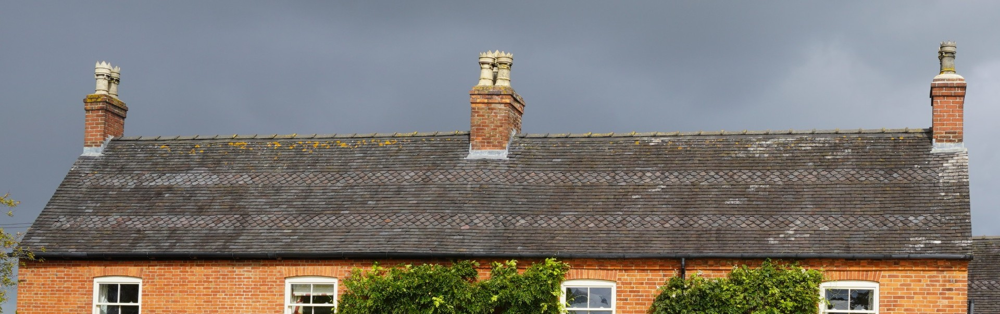
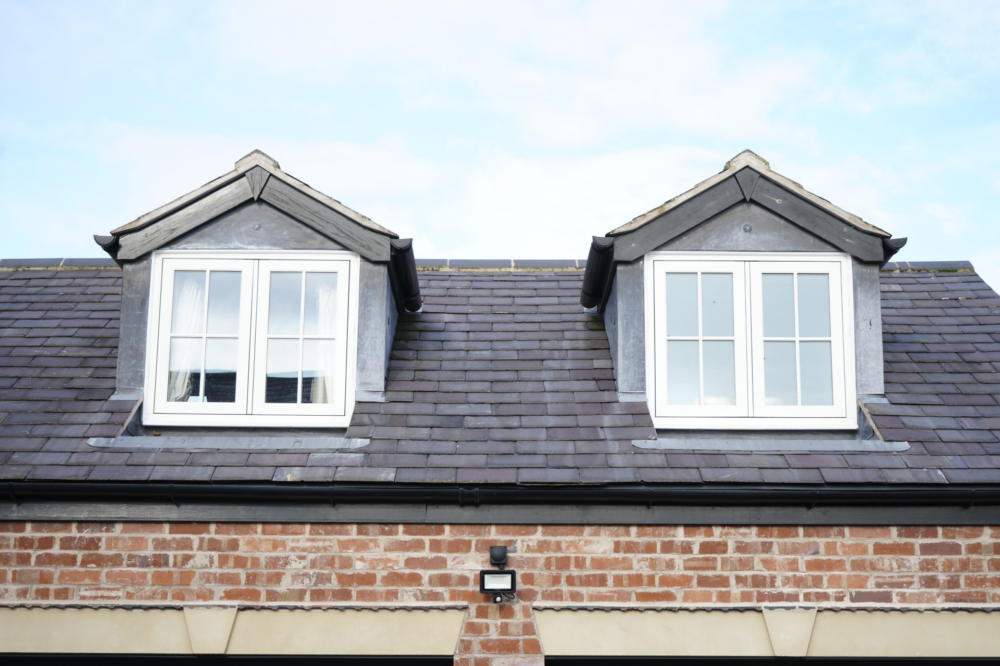
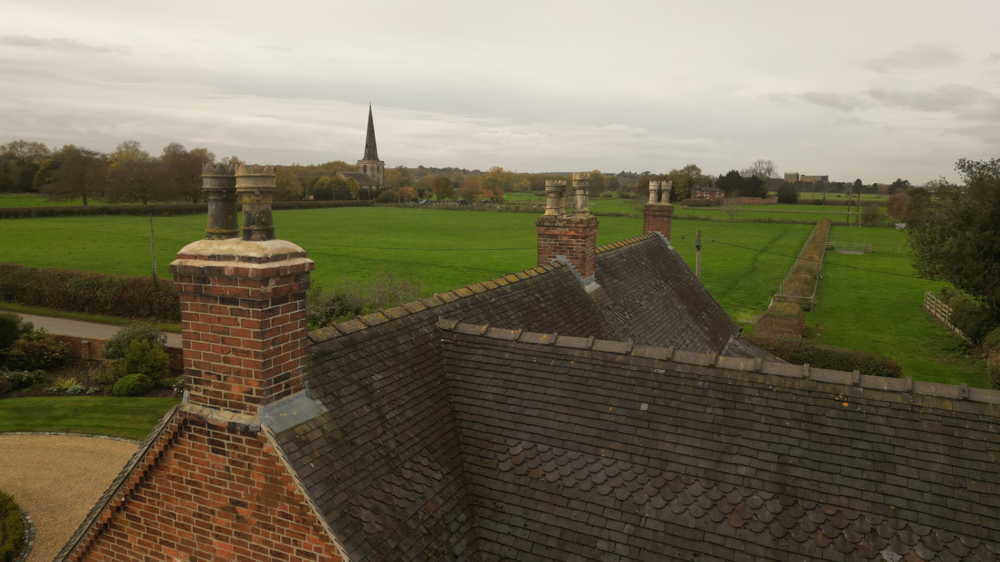
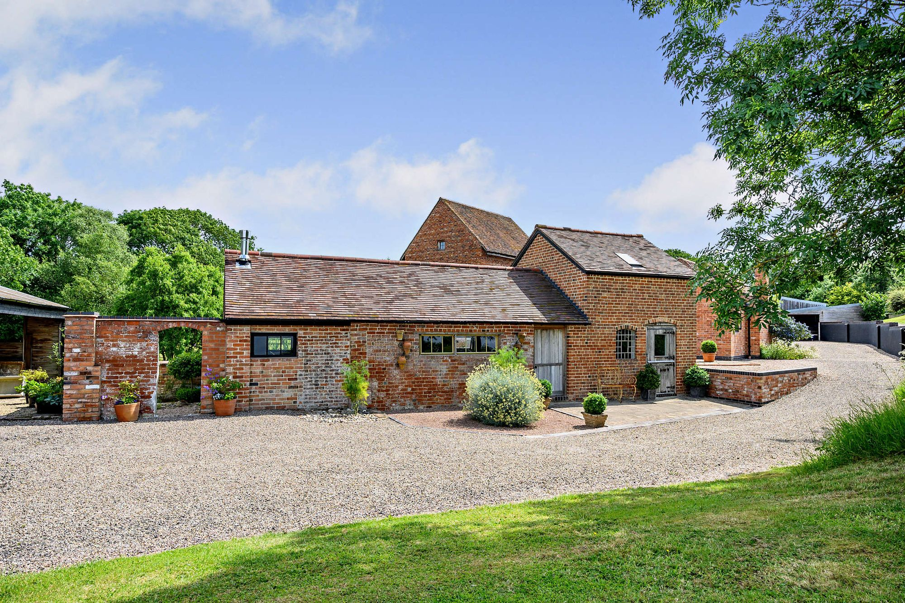
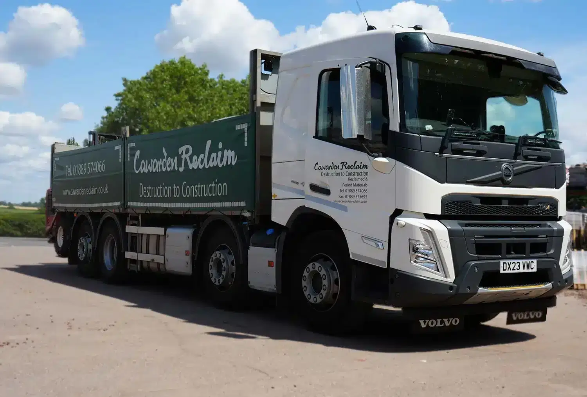
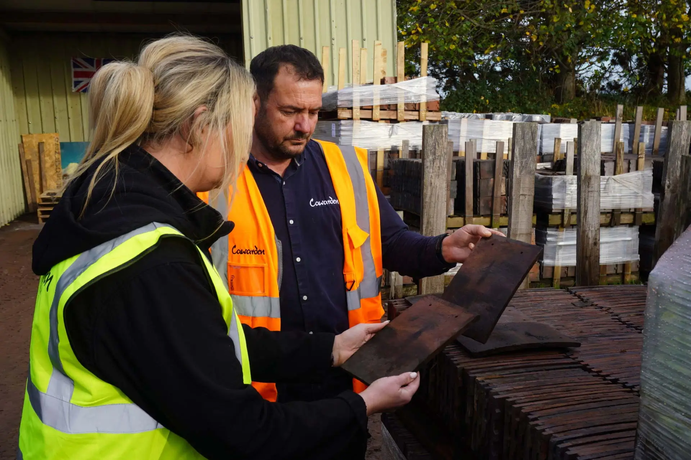

Cawarden are a leading provider of an impressive range of reclaimed ridge tiles. These old ridge tiles are available in a range of materials such as clay, terracotta, concrete and solid stone. Our vast stock of over 250,000 consists of interlocking, butt up, half round, hoggs back, saddle back and decorative ornate ridge tiles. Worldwide delivery available. Browse our stock below.
Browse StockOver 250,000 ridge tiles in stock — browse by type below

Reclaimed butt up ridge tiles are traditional roofing tiles that were first introduced in the 1870s. These old ridge tiles are designed to "butt up" alongside each other and are normally joined together using mortar. Made from materials such as clay or concrete, they provide durability and authentic character making them perfect for restoration projects. Browse our stock today.

Interlocking Ridge Tiles are original reclaimed roof tiles that provide a secure, weatherproof roof finish. Introduced over 200 years ago in clay, they can be handmade or machine made, with an interlocking design allowing faster installation. The concrete versions were introduced in the 1920s to offer a more cost-effective and durable option. Browse our stock today.

Half round ridge tiles became popular in the early 1600s and are traditionally fitted using mortar. Available in clay, concrete or terracotta they come in sand faced or smooth finishes, offering a classical look to your traditional roofing project. These ridge tiles were the most commonly used ridge tiles during the 19th century. Browse our stock today.

Reclaimed hogs back ridge tiles are used to cap the apex of a roof, they date back to the early 1600s where they were typically handmade by being bent over the knee to achieve their distinctive angle. Available in interlocking and butt-up designs and colours including red and Staffordshire blue. Browse our stock today!

Reclaimed saddle back ridge tiles are named because their shape which resembles a saddle. They are available in interlocking and butt up styles and are normally made from terracotta, clay or concrete. Old saddleback ridge tiles were most popular in the UK in the 18th century, traditionally handmade by being bent over the knee or moulded in wooden moulds. Browse our stock today.

Reclaimed decorative ridge tiles come in designs like crested, clover leaf, cocks comb, roll top and club. Typically made from terracotta or clay, pre-1870s they were handmade and moulded by hand. After the industrial revolution the majority were machine made for mass production. Browse our stock today.

Reclaimed roof finials are traditionally used at the very end of the roof apex to add a finishing touch and character. Typically made from terracotta or solid stone, they were extremely popular during the Victorian and Edwardian eras. Common styles include fleur-de-lys, scrolls, spheres and mythical creatures such as dragons, gargoyles and griffins. Browse our stock below.

Reclaimed vented ridge tiles are made from clay or terracotta and were used to improve airflow in buildings. Commonly installed on farm buildings over 200 years ago to reduce the risk of diseases in animals, first used in the UK in the early 1800s. These tiles allowed warm stale air to escape while keeping out rain, improving conditions for livestock and maintaining healthier environments.
At Cawarden Reclaim we stock an extensive range of reclaimed ridge tiles to suit every roof style. Our collection includes traditional butt up, interlocking, half round, hogsback, saddleback, fancy and vented ridge tiles, as well as roof finials. Each tile is carefully reclaimed to preserve its original character and quality and with over 250,000 ridge tiles available you are sure to find the perfect match for your project.
For more than 35 years Cawarden Reclaim has been serving homeowners and the roofing trade from our 11-acre yard and showroom in Staffordshire. With over 100 years of combined expertise, our knowledgeable team can guide you to the most suitable and durable reclaimed ridge tiles for your roof. We pride ourselves on being the largest reclaim yard in the UK, our sustainability, premium quality materials, and exceptional service, earning a 4.8 Google rating and the trust of over 100,000 customers.

We offer a worldwide delivery service from individual items to multiple articulated loads. We use a range of delivery services which include the pallet network and our own fleet of specialist vehicles which include wagons with detachable trailers and moffetts, vans, pickups and a 2 man delivery service for heavier bulky items that need to be taken into your home. Please contact our friendly sales team who will assist you with any queries or requirements you may have.
Check Delivery Details
We provide a professional ridge tile matching service which is FREE to help you find exactly the right ridge tiles for your roof. This complimentary service removes the stress of hunting for the perfect match, making the process straightforward and hassle free.
Our team with over 150 years of combined experience ensures you get the most accurate and reliable match for your project. Contact us today with your requirements.
Visit Our Brick Matching Service4.8/5 stars on Google Reviews - Over 250+ customer reviews
Excellent service and quality bricks. The team helped match our Victorian bricks perfectly for our extension. Highly recommend!
Amazing selection of reclaimed ridge tiles. The ridge tile matching service saved us so much time. Professional delivery too.
Great quality reclaimed ridge tiles. Staff are very knowledgeable and helpful. Will definitely use again for future projects.
Restoring or extending a property? Reclaimed ridge tiles help keep your roofline consistent while preserving character, weathered tone, and period detail.
Our team can advise on profile matching, quantity guidance, and the most suitable reclaimed options for your project.
Explore customer project examples for inspiration before speaking with our specialists.
View Customer ProjectRidge tiles are specially shaped tiles that sit along the peak or ridge of a roof, covering the joint where two roof slopes meet. Reclaimed ridge tiles are old tiles that have been carefully removed from old existing roofs, they are then sorted and quality checked for reuse. Reclaimed ridge tiles are perfect for roof repairs or extensions because they match the age, colour, texture and character of your existing roof, this is something a new ridge tile cannot replicate.
By choosing reclaimed ridge tiles this allows you to create a seamless match to your existing roof profile, colour, and weathered finish. If you choose new ridge tiles they look noticeably different in tone and texture. They are commonly used on period properties and conservation projects.
We provide a FREE reclaimed ridge tile matching service to ensure a perfect match with your existing roof. Simply send us photos and measurements of the ridge tile you are looking to match to or replace, and our experts will do the rest. Contact our sales team today to find the right ridge tiles for your project.
The number of ridge tiles required depends on the size of the ridge tile and the length of the roof ridge. Ridge tiles are normally installed with mortar joints between each tile, so you need to allow for overlap and joint spacing when calculating quantities. Measure the total ridge length and divide by the tile length, factoring in joints or contact our team and we can calculate the exact number you needed.
Yes, reclaimed ridge tiles are used on listed buildings and conservation areas because they maintain the original character and appearance of the roof. Many conservation officers favour reclaimed materials for roof repairs on old buildings.